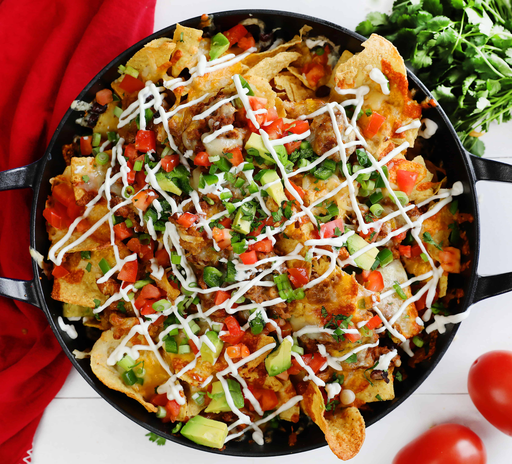

Nachos

Super Nachos!
Ingredients:
- 1 pound ground beef
- 1 (1.25 ounce) package taco seasoning mix
- 1 (18 ounce) package restaurant-style tortilla chips
- 1 cup shredded sharp Cheddar cheese, or more to taste
- 1 (15.5 ounce) can refried beans
- Lasagna noodles
- 1 cup salsa
- 1 cup sour cream, or more to taste
Steps:
- Preheat the oven broiler. Set the oven rack about 6 inches from the heat source. Line a baking sheet with aluminum foil.
- Gather all ingredients.
- Cook and stir ground beef in a skillet over medium heat until meat is crumbly and no longer pink, 5 to 10 minutes.
- Drain excess grease.
- Stir in water and taco seasoning mix; simmer until beef mixture has thickened, 8 to 10 minutes.
- Spread tortilla chips on the prepared baking sheet. Top with Cheddar cheese, then dot with refried beans and ground beef mixture.